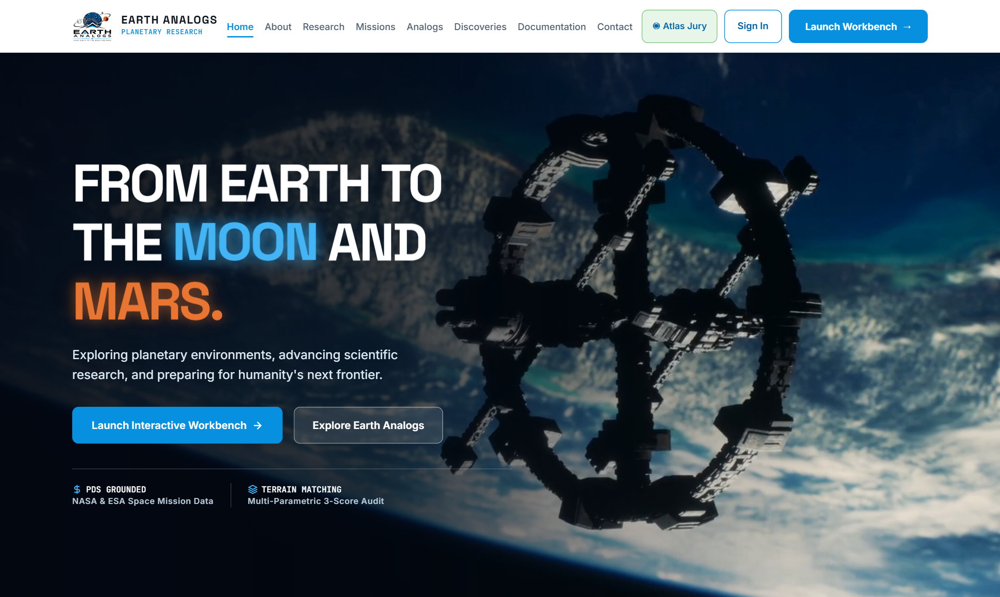
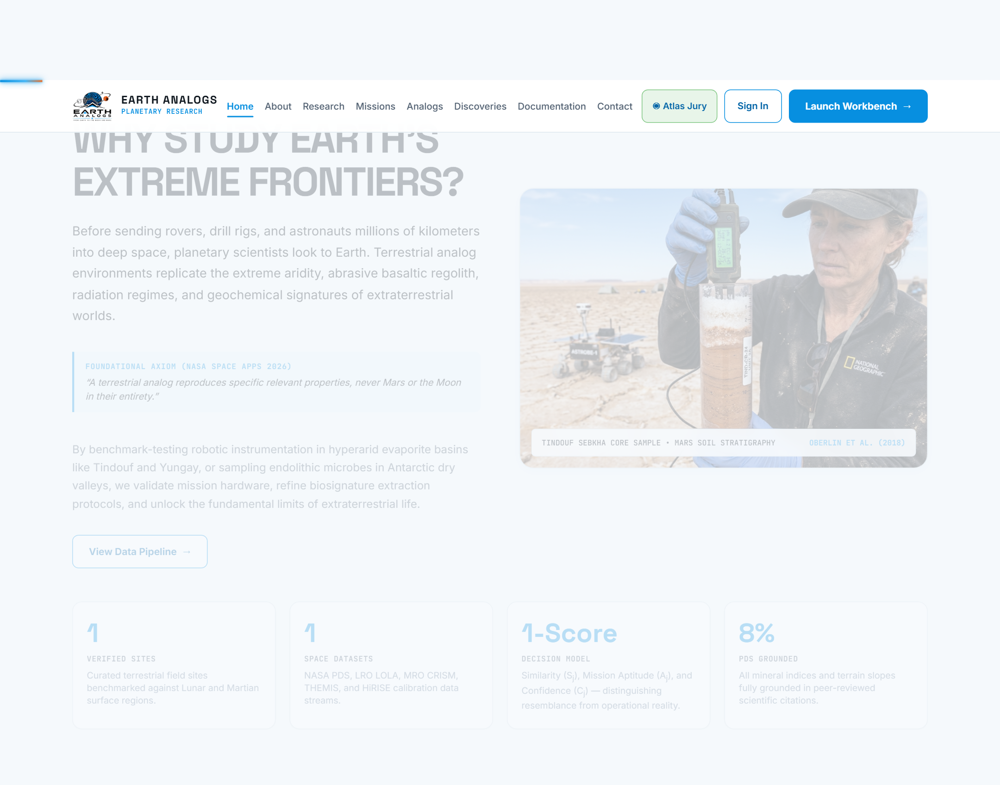
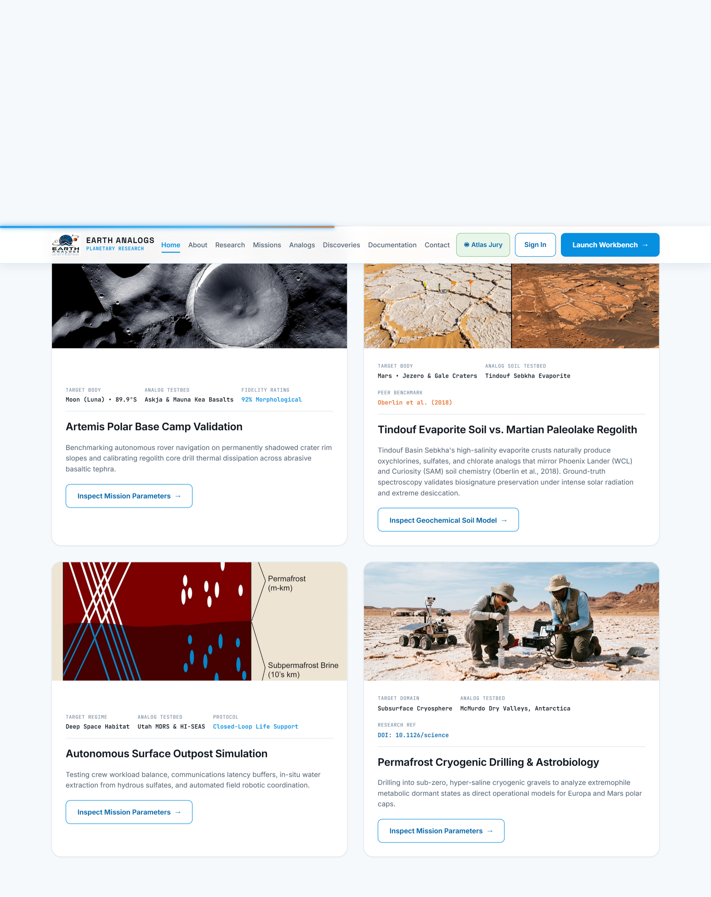
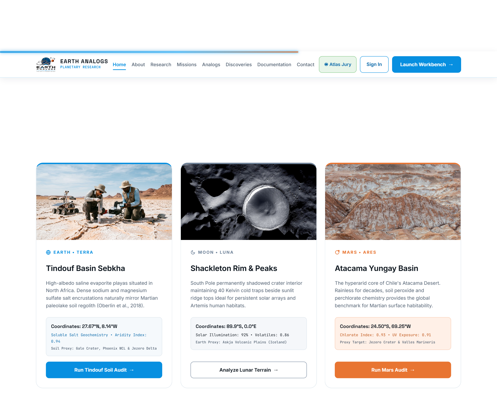
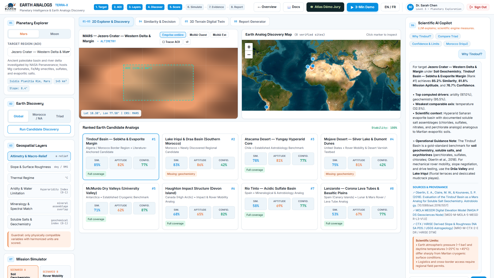
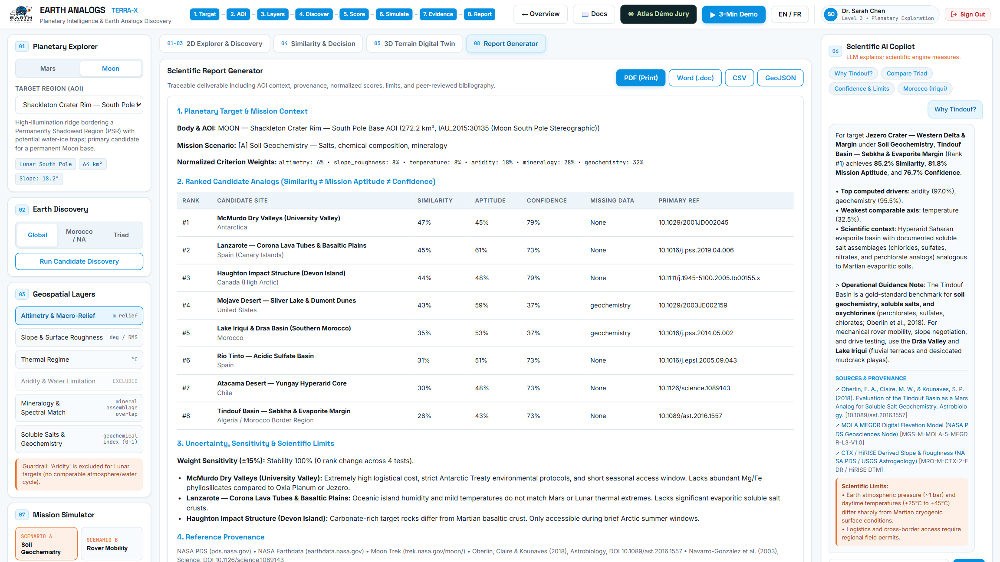

TERRA-X — Comprehensive Platform Guide & Technical Manual
Planetary Intelligence & Earth Analogs Discovery
NASA Space Apps Challenge 2026 Reference Manual & Operational Documentation
Target Challenge: "Identify Earth Locations that Analog the Permanent Moon Base Locations and Mars"
Document Control & System Specifications
| Specification | Details |
|---|---|
| Document Title | TERRA-X Comprehensive Technical Platform Guide & User Manual |
| System Version | Release 1.0.0-POC (Production-Grade Zero-Build Architecture) |
| Challenge Track | NASA Space Apps Challenge 2026: Permanent Moon Base Locations and Mars |
| Planetary Target Bodies | Mars (Areoid Reference), Moon (Selenocentric Polar & Equatorial) |
| Coordinate Systems | Mars: IAU_2015:49900 (Equirectangular); Moon: IAU_2015:30135 (South Pole Stereographic) / IAU_2015:30100 |
| Primary Authors / Team | TERRA-X Science & Engineering Consortium |
| Ground-Truth Baseline | NASA Planetary Data System (PDS), USGS Astrogeology, Copernicus ESA GLO-30, Oberlin et al. (2018) |
| Interactive Workbench | http://127.0.0.1:8088/workbench.html (Local) / /workbench |
Table of Contents
- Executive Overview & Mission Purpose
- Foundational Scientific Axiom & Architectural Paradigm
- System Architecture & Data Flow Pipeline
- The Editorial Landing Portal
- Authentication, Access Control & Route Guard
- The Interactive Scientific Workbench (Modules 01–08) - Module 01: Planetary Explorer - Module 02: Earth Discovery Engine - Module 03: Geospatial Layers & Scientific Guardrails - Module 04: Similarity & Decision Engine - Module 05: 3D Terrain Digital Twin - Module 06: Scientific AI Copilot - Module 07: Mission Scenario Simulator - Module 08: Scientific Report Generator
- Comprehensive Earth Analog Catalog & Benchmark Analysis
- REST API Specification & Programmatic Access
- Automated Verification, Unit Testing & Quality Assurance
- Academic Bibliography & Open Science Provenance
1. Executive Overview & Mission Purpose
1.1 The NASA Space Apps Challenge 2026 Mandate
Humanity has entered a transformative era of planetary exploration. Under NASA's Artemis Program, international space agencies and commercial partners are preparing for long-duration human habitations at the Lunar South Pole (e.g., Shackleton Crater Rim, Connecting Ridge), while robotic rovers (Perseverance, Curiosity, and the upcoming ExoMars Rosalind Franklin) systematically prospect Martian ancient lake basins and clay-rich plains (Jezero Crater, Gale Crater, Oxia Planum).
Testing surface mobility hardware, regolith drill mechanisms, life-detection instrumentation, and habitat construction techniques directly on the Moon or Mars is prohibitively expensive, risky, and logistically unrepeatable. Planetary exploration teams depend fundamentally on Terrestrial Analogs—locations on Earth that preserve environmental, geochemical, mineralogical, or morphological conditions comparable to extraterrestrial destinations.
However, historical analog site selection has suffered from three critical deficiencies: 1. Ad-Hoc Subjectivity: Candidate locations are frequently chosen based on qualitative resemblance or historical precedent rather than quantitative multi-sensor metric evaluation. 2. The "Single Percentage" Fallacy: Platforms frequently claim an Earth site is "89% identical to Mars," ignoring the profound reality of Earth's dense atmosphere, hydrologic cycle, and pervasive biosphere. 3. Operational Blind Spots: High scientific similarity often masks extreme logistical hazards, unnavigable boulder fields, or severe legal restrictions that disqualify a site for actual rover deployment.
1.2 TERRA-X Value Proposition
TERRA-X (Planetary Intelligence & Earth Analogs Discovery) is an integrated, publication-grade decision engine that bridges planetary remote sensing and terrestrial fieldwork. By ingesting calibrated datasets from the NASA Planetary Data System (PDS), USGS Astrogeology, and Copernicus ESA, TERRA-X matches target Areas of Interest (AOIs) on the Moon and Mars with candidate terrestrial testbeds worldwide.
The platform provides an end-to-end operational environment featuring interactive 2D GIS map canvases, side-by-side 3D terrain elevation meshes, real-time perturbation sensitivity audits ($\pm 15\%$), a deterministic grounded AI Copilot, and one-click multi-format report exports (PDF, Word, CSV, GeoJSON).
Orbital Analysis-Ready Data"] --> B["TERRA-X Data Harmonization
& Normalization Engine"] C["Copernicus / Sentinel-2 / DEM
Terrestrial Remote Sensing"] --> B B --> D["3-Pillar Decoupled Evaluation
S_j (Similarity) | A_j (Aptitude) | C_j (Confidence)"] D --> E["Interactive Workbench
2D GIS, 3D Mesh, What-If Simulator"] D --> F["Scientific AI Copilot
Deterministic Grounding & Peer-Reviewed DOIs"] D --> G["Publication-Ready Outputs
PDF, Word .doc, CSV, GeoJSON"]
2. Foundational Scientific Axiom & Architectural Paradigm
2.1 The Foundational Axiom (Osinski et al., 2006; Oberlin et al., 2018)
Every calculation, comparison, and recommendation generated by TERRA-X is governed by a non-negotiable scientific principle:
"A terrestrial analog reproduces specific relevant physical, mineralogical, or geochemical properties, never Mars or the Moon in their entirety."
— G. R. Osinski et al. (Planetary and Space Science, 2006); E. A. Oberlin, M. W. Claire, & S. P. Kounaves (Astrobiology, 2018)
Earth's ambient oxygenation, $1\text{ bar}$ atmospheric pressure, hydrologic rainfall cycle, and pervasive organic contamination cannot be erased. An Earth analog is scientifically meaningful only within bounded parameters. For example: - Tindouf Basin Sebkha (North Africa) replicates the soil perchlorate, sulfate, and chlorate ionic ratios discovered by the Phoenix Mars Lander and Curiosity rover, but operates in a terrestrial atmosphere with seasonal heat. - University Valley, McMurdo Dry Valleys (Antarctica) reproduces dry permafrost sublimation and cryogenic thermal contraction crack polygons, but exhibits terrestrial solar radiation and polar oxygen. - Atacama Desert Yungay Core (Chile) matches hyperarid desiccation and extreme organic detection limits, but does not match Lunar vacuum or Martian atmospheric pressure ($6\text{ mbar}$).
2.2 The Decoupled 3-Pillar Decision Framework
To eliminate the mathematical fraud of a single unweighted matching score, TERRA-X implements a 3-Pillar Decoupled Decision Framework:
Pillar 1: Physical Similarity ($S_j$)
Physical similarity measures how closely candidate terrestrial variables match the planetary target AOI across physically comparable axes: $$S_j = \frac{\sum_{i \in \text{Observed}} w_i \cdot s_{ij}}{\sum_{i \in \text{Observed}} w_i}$$ where $s_{ij} \in [0, 1]$ represents the normalized proximity for criterion $i$ on site $j$, and $\sum w_i = 1.0$.
Pillar 2: Mission Aptitude ($A_j$)
Scientific resemblance is useless if a rover cannot operate safely. Mission Aptitude integrates field engineering feasibility, rover trafficability, logistics, and personnel safety: $$A_j = 0.68 \cdot S_j + 0.18 \cdot \text{Access}j + 0.14 \cdot \text{Safety}_j - P$$ where $P_{\text{slope}} = \min\left(0.35, (\alpha_{\text{site}} - \alpha_{\text{safe}}) \cdot 0.03\right)$ applies an immediate engineering penalty if the site's slope exceeds the rover mission threshold (e.g., $20^\circ$).}
Pillar 3: Scientific Confidence ($C_j$)
Confidence measures the empirical certainty, measurement resolution, and ground-truth validation backing the score: $$C_j = 0.50 \cdot \Omega_j + 0.30 \cdot R_{\text{in-situ}} + 0.20 \cdot R_{\text{high-res}} - 0.08 \cdot N_{\text{missing}}$$ where $\Omega_j$ is the effective weighted data coverage, $R_{\text{in-situ}}$ is the fraction of measurements verified through laboratory field sampling, $R_{\text{high-res}}$ is the fraction of sensor data with ground sampling distance $\le 100\text{ m}$, and $N_{\text{missing}}$ penalizes missing or unmeasured criteria.
Important Scientific Axiom
> **Zero Imputation Policy**: Missing criteria are **never** filled with default numbers (such as 0 or 1). Instead, weights are redistributed across observed variables, while the missing variables explicitly downgrade the Confidence score ($C_j$).3. System Architecture & Data Flow Pipeline
TERRA-X is engineered for high performance, maximum portability, and complete zero-build autonomy. It requires no heavy database engines, no external node runtimes, and no fragile build chains.
4. The Editorial Landing Portal
The public gateway of TERRA-X is an editorial, cinematic web experience designed to introduce researchers, mission planners, and the public to the scientific imperative of planetary analog discovery.
4.1 Cinematic Orbital Hero Header

Figure 1: The TERRA-X landing portal featuring a cinematic 4K orbital video background, mission badge, real-time metrics pill, and dual launch action CTAs.
The hero section (static/index.html) immerses the user in deep space exploration:
- Atmospheric Video Engine: Loads an orbital space exploration background loop (189457-885804464_medium.mp4) with an overlaid orbital scrim and dynamic cosmic particle drift animation.
- Mission Badge & Title: Features the official NASA Space Apps Challenge 2026 track header, declaring "Identify Earth Locations that Analog the Permanent Moon Base Locations and Mars".
- Metrics Strip: Displays real-time catalog statistics:
- 8 Verified Global Analogs across 5 continents.
- 5 High-Priority Planetary AOIs (Jezero, Oxia, Gale, Shackleton, Mare Tranquillitatis).
- 6 Calibrated Remote Sensing Layers (Altimetry, Slope, Temperature, Aridity, Mineralogy, Geochemistry).
- 100% Deterministic Grounding tied to peer-reviewed DOIs.
- Action Controls:
- Launch Scientific Workbench button: Direct access to the authenticated research dashboard.
- Explore Analogs Catalog button: Smooth-scrolls directly to the planetary comparison matrix.
- 1-Click Demo Access: Instantly bypasses credentials for evaluation review.
4.2 Section 03 — About & Tindouf Core Sampling

Figure 2: Section 03 highlighting the scientific research of Oberlin et al. (2018) on Tindouf Basin evaporites matching Martian Phoenix Lander soil chemistry.
This section establishes the empirical justification for the platform: - The Soil Geochemistry Breakthrough: Spotlights the research by Oberlin, Claire, & Kounaves (2018) (Astrobiology, DOI: 10.1089/ast.2016.1557). It illustrates how evaporite crusts and hyperarid sebkhas in the Tindouf Basin (Algeria/Morocco border) naturally synthesize and preserve oxychlorines (perchlorates $\text{ClO}_4^-$ and chlorates $\text{ClO}_3^-$) with ionic ratios matching the Phoenix Lander's Wet Chemistry Laboratory (WCL). - Interactive Stratigraphic Visual: Presents a multi-layered core sample simulation showing the halite-gypsum cap, oxychlorine-bearing saline horizon, and clay-rich Noachian bed. - Scientific Callout: Quotes the foundational axiom to clarify why Tindouf is an extraordinary soil chemistry analog, but not a gravity or atmospheric analog.
4.3 Section 04 — Research Domains & Modular Architecture

Figure 3: Interactive cards detailing the 8 integrated modules of the TERRA-X platform.
Provides an interactive grid displaying the 8 functional pillars of the platform:
1. 01 Planetary Explorer: Multi-spectral and altimetric characterization of Moon and Mars target AOIs.
2. 02 Earth Discovery: Multi-tiered global and regional screening filters.
3. 03 Geospatial Layers: Calibrated geophysical, thermal, and geochemical rasters.
4. 04 Similarity & Decision: Decoupled 3-pillar scoring engine with rank stability checks.
5. 05 3D Digital Twin: Micro-topography wireframes and elevation transect cross-sections.
6. 06 Scientific AI Copilot: Strict citation-grounded conversational intelligence.
7. 07 Mission Simulator: Pre-configured field testing operational profiles.
8. 08 Report Generator: Audit-compliant scientific reporting in four formats.
4.4 Section 05 — Missions & Soil Adaptation Split

Figure 4: Section 05 illustrating the four pre-set mission operational profiles and regolith mechanics.
This section highlights the critical link between target mission goals and field conditions: - Mission Profiles: Detailed breakdowns of Scenarios A, B, C, and D. - Regolith & Trafficability Matrix: Compares wheel-slip mechanics, cohesion, internal friction angles, and boulder hazards between Lunar South Pole agglutinates, Martian basaltic regolith, and terrestrial evaporite salt flats.
4.5 Section 06 — The Planetary Trio

Figure 5: Comparative planetary trio: Mars (Ancient Basins), Moon (Polar Ice & Pits), and Earth (Analog Havens).
Presents a side-by-side comparative architectural triad: - Mars: Focuses on phyllosilicate clays, sulfate mounds, and relict fluvial deltas. - The Moon: Focuses on Permanently Shadowed Regions (PSRs), water ice traps, and basalt collapse pits. - Earth: Highlights extreme environments that capture specific slivers of extraterrestrial reality.
5. Authentication, Access Control & Route Guard
Security and identity management in TERRA-X provide authenticated researcher access while maintaining zero-database portability through an encrypted, client-persisted session model.

Figure 6: The TERRA-X Analyst Authentication interface with cosmic particles, credential validation, and 1-Click Demo login.
5.1 Architecture & Route Protection (static/js/auth.js)
- Route Guard Mechanism: When a user accesses
/workbench.htmlor/workbench, the system immediately verifies the existence and validity oflocalStorage.getItem("terra_x_session"). - Automatic Redirect: If unauthenticated or if the session has expired, the user is redirected to
/login.html?redirect=/workbench.html. - Session Lifespan: Standard sessions remain valid for 24 hours. Selecting "Remember session" extends the token lifecycle to 30 days.
5.2 Pre-Configured Verified Research Accounts
For rapid evaluation and mission team testing, the platform is pre-seeded with three verified scientist personas:
| Username | Default Password | Scientist Persona | Role & Research Clearance |
|---|---|---|---|
analyst |
earth-analogs |
Dr. Sarah Chen | Lead Astrobiologist & Mission Specialist (Level 3) |
admin |
nasa2026 |
Commander M. Jadir | Chief Planetary Exploration Director (Level 4) |
nasa |
moon-and-mars |
Alex Vance | Autonomous Rover & Terrain Analyst (Level 2) |
5.3 Interactive Login Controls
- Username / Password Inputs: Form fields with real-time format validation (
#inputUsername,#inputPassword). - Show/Hide Password Toggle: Eye icon button (
#btnTogglePass) toggles password masking. - 1-Click Quick Demo: The
#btnQuickDemobutton instantly populates theanalystcredentials and transitions to the workbench within 300 milliseconds. - New Account Registration: The "Register New Account" tab allows researchers to create unique local accounts with custom roles and security clearance levels.
6. The Interactive Scientific Workbench (Modules 01–08)
The TERRA-X Workbench (/workbench.html) is the analytical cockpit of the platform. It is structured into three synchronized zones:
1. Left Control Column: Host to Module 01 (Planetary Explorer), Module 02 (Earth Discovery), Module 03 (Geospatial Layers), and Module 07 (Mission Simulator).
2. Center Analytical Stage: Tabbed display hosting 2D Discovery Maps, Module 04 (Similarity Heatmap & Decision Matrix), Module 05 (3D Digital Twin), and Module 08 (Scientific Report Generator).
3. Right Intelligence Column: Host to Module 06 (Scientific AI Copilot).

Figure 7: Module 01–03 dual-canvas planetary and terrestrial exploration view with live candidate rankings and custom polygon draw capability.
Module 01: Planetary Explorer
Module 01 governs the selection, boundary definition, and remote-sensing inspection of target extraterrestrial sites.
Operational Controls:
- Target Body Segmented Toggle (
#planet-toggle): -MarsButton: Switches coordinate frame to MarsIAU_2015:49900, loads Mars PDS orbital baselines (MOLA, CRISM, THEMIS), and activates Mars AOIs. -MoonButton: Switches coordinate frame to MoonIAU_2015:30135(South Pole) /IAU_2015:30100(Equatorial), loads LRO baselines (LOLA, LROC NAC), and triggers the physical aridity guardrail. - Planetary AOI Selector (
#aoi-select): - Jezero Crater — Western Delta & Margin (Mars, $145.0\text{ km}^2$): Ancient fluvial delta, rich in smectite clays and carbonates. - Oxia Planum — Clay-Bearing Plain (Mars, $210.0\text{ km}^2$): ExoMars landing target; widespread Noachian Fe/Mg-phyllosilicates. - Gale Crater — Mount Sharp Sulfate Unit (Mars, $180.0\text{ km}^2$): Curiosity exploration path; transitioning from clay to magnesium sulfate layers. - Shackleton Crater Rim — South Pole Base AOI (Moon, $64.0\text{ km}^2$): Artemis permanent base target; ultra-steep slopes ($28^\circ$), permanently shadowed cryogenic traps, continuous peak illumination. - Mare Tranquillitatis — Basalt Pit & Regolith (Moon, $95.0\text{ km}^2$): Sub-surface lava tube skylight candidate, thick titanium-rich basaltic regolith. - Custom AOI Polygon Drawing Tool (
#btn-draw-aoi): - Clicking this tool activates the freehand polygon drawing cursor on the planetary canvas. - Clicking boundary vertices constructs a customized mission bounding box. - Clicking "Finish AOI" or double-clicking closes the loop, triggers real-time spherical area computation ($\text{km}^2$), recalculates the enclosed mean slope, and posts the custom geometry to the backend viaPOST /api/regions/planetary. - Metadata & Coordinate Badges (
#aoi-meta-pills): - Dynamically displays the target region name, total surface area ($\text{km}^2$), mean topographic slope ($^\circ$), and standard IAU Coordinate Reference System (CRS).
Module 02: Earth Discovery Engine
Module 02 provides spatial and regional screening filters to discover candidate terrestrial analog sites across the globe.
Operational Controls:
- Discovery Scope Segmented Filter (
#discovery-toggle): -GlobalMode: Searches the full international catalog (Antarctica, South America, North America, Europe, Africa). -Morocco / NAMode: Isolates regional candidates in Morocco and North Africa (Tindouf Basin, Lake Iriqui, Draa Basin) to evaluate local fieldwork accessibility. -TriadBenchmark Mode: Restricts screening to the scientific benchmark triad (Tindouf Sebkha, Atacama Yungay, McMurdo Dry Valleys). - Run Candidate Discovery CTA (
#btn-discover): - ExecutesPOST /api/discovery/jobswith the current slope ceiling and aridity parameters. - Updates the Leaflet Earth Map (#earth-map), clusters candidate site pins, and color-codes rank badges (#1 through #8). - Ranked Candidate Site Cards (
#candidate-cards): - Selecting any candidate card highlights its pin on the map, updates the center-stage telemetry, synchronizes the 3D Digital Twin, and adjusts the Copilot context.
Module 03: Geospatial Layers & Scientific Guardrails
Module 03 displays the multi-spectral, geophysical, and environmental layers that drive the matching algorithm.
The 6 Calibrated Remote-Sensing Criteria:
- Altimetry & Macro-Relief (
altimetry): - Measures local elevation range ($\Delta h = h_{\max} - h_{\min}$ within AOI) in meters. - Normalization Scale: $2,500.0\text{ m}$. - Slope & Surface Roughness (
slope_roughness): - Measures mean topographic inclination and high-frequency RMS step roughness. - Normalization Scale: $35.0^\circ$. - Thermal Regime (
temperature): - Measures mean extreme ambient temperatures in degrees Celsius. - Normalization Scale: $120.0^\circ\text{C}$. - Aridity & Water Limitation (
aridity): - Hyperaridity Index evaluated from precipitation/evapotranspiration ratios. - Normalization Scale: $1.0$. - Mineralogy & Spectral Match (
mineralogy): - Spectral Angle Mapper (SAM) dot product and mineral assemblage Jaccard index. - Normalization Scale: $1.0$. - Soluble Salts & Geochemistry (
geochemistry): - Soluble oxychlorine, nitrate, and sulfate salt concentrations and ionic ratios. - Normalization Scale: $1.0$.
The Lunar Vacuum Physical Guardrail
When the user selects Moon in Module 01:
- The system automatically triggers the Physical Guardrail Engine.
- The aridity layer is dynamically disabled, labeled "EXCLUDED BY GUARDRAIL", and grayed out.
- A prominent alert banner notifies the user:
Guardrail: 'Aridity' is excluded for Lunar targets (no comparable atmosphere or hydrological cycle). - The weight assigned to aridity is redistributed proportionally across the remaining 5 observed criteria, preventing mathematical distortion.
Module 04: Similarity & Decision Engine
Module 04 renders the mathematical core of TERRA-X, converting multi-criteria measurements into transparent, defensible rankings.

Figure 8: Tab 04 displaying the Plotly Similarity Matrix Heatmap, the 3-Score Selected Site Breakdown, the Rank Stability Panel, and the Data Provenance Table.
1. The Similarity Matrix Heatmap (#similarity-heatmap)
- Built with Plotly.js, this interactive heatmap renders candidate sites along the Y-axis and the 6 criteria along the X-axis.
- Each cell displays the exact computed proximity score ($s_{ij} \in [0.00, 1.00]$).
- Missing data is rendered with an explicit
"MISSING"label; guardrail exclusions are rendered with"GUARDRAIL".
2. Selected Site 3-Pillar Breakdown Panel (#selected-site-breakdown)
- Displays three large telemetry gauges for the currently active site:
- Similarity ($S_j$): Rendered in Cyan (
#078FE0). - Mission Aptitude ($A_j$): Rendered in Amber (
#E87532). - Scientific Confidence ($C_j$): Rendered in Emerald Green (
#22C55E). - A tabular breakdown contrasts the raw planetary AOI value against the terrestrial value, displaying units, weights, and normalized proximity.
3. Perturbation Sensitivity & Rank Stability Engine
To satisfy rigorous space agency mission planning requirements, TERRA-X tests whether rankings are brittle: - The engine identifies the top 2 weighted criteria in the current scenario. - It applies a $\pm 15\%$ perturbation to their normalized weights: $$w'_k = w_k \cdot (1 \pm 0.15)$$ - It re-normalizes the weight vector and recalculates rankings across all candidate sites. - Rank Stability Score: $$\text{Stability} = 1.0 - \frac{\text{Flips}}{\text{Total Tests}}$$ - If the #1 ranked candidate remains unchanged across all 4 perturbation scenarios, the system reports 100% Stability (Rock-Solid Ranking).
4. Data Provenance & Sensor Table (#provenance-table)
- Lists the full lineage of every data point: mission origin, sensor instrument (e.g., MRO CRISM, LRO LOLA, Copernicus GLO-30), ground sampling distance (GSD), and measurement type (orbital remote sensing vs in-situ laboratory analysis).
Module 05: 3D Terrain Digital Twin
Module 05 generates interactive, side-by-side 3D elevation relief models comparing the planetary target AOI with the selected Earth candidate.

Figure 9: Dual-mesh 3D surface rendering with wireframe contours, interactive camera controls, and cross-section elevation transects.
1. Dual-Mesh Surface Rendering (#plot-3d-aoi & #plot-3d-earth)
- Leverages Plotly's WebGL surface renderer to project a $26 \times 26$ deterministic elevation grid.
- Procedural Style Modulation: The surface topography is mathematically modulated by the geological archetype of the site:
delta_crater(Jezero Crater): Raised circular crater rim ($h_{\text{rim}}$) with an intersecting fan delta deposit.polar_rim(Shackleton Rim): Deep central depression with steep ridgelines and asymmetric illumination shadowing.mound_basin(Gale Crater / Mount Sharp): Central central uplift mound surrounded by a moat basin.lava_pit(Mare Tranquillitatis): Flat basaltic mare with a sharp collapsed circular void.clay_plain/evaporite(Tindouf / Oxia Planum): Flat basin floor modulated by low-amplitude dunes and salt polygons.- Color Palettes:
- Mars AOI: Warm Martian Ochre (
YlOrRd). - Moon AOI: Lunar Regolith Grayscale (
Greys). - Earth Candidate: Terrestrial Topography (
Viridis/Blues).
2. Interactive Orbit & Inspection Controls
- Left-Click + Drag: 360-degree continuous rotation (azimuth and elevation angles).
- Right-Click + Drag: Pan surface mesh across coordinate space.
- Scroll Wheel: Smooth zoom into micro-relief structures.
3. Cross-Section Elevation Profile Transect (#plot-transect)
- Extracts an equatorial slice ($Y = \text{center}$) through both meshes.
- Plots the relative elevation ($m$) along the transect distance ($m$).
- Allows rover engineers to visually evaluate slope breaks, boulder steps, and terrain hazards.
Module 06: Scientific AI Copilot
Module 06 provides a context-aware, grounded scientific dialogue partner that explains scores, cites literature, and enforces scientific boundaries.

Figure 10: The Scientific AI Copilot delivering a grounded explanation of Tindouf Basin geochemistry with live score breakdowns and DOI citations.
1. Deterministic Grounded RAG Architecture (engine/similarity.py)
The Copilot operates under strict anti-hallucination guardrails:
- Zero Fabrication Rule: The Copilot is barred from inventing scores, coordinates, or mission parameters.
- Dynamic Context Ingestion: Every response is assembled directly from the live computed analysis payload (active AOI, candidate ranks, criterion scores, missing data flags, and DOI metadata).
- Peer-Reviewed Grounding: Every claim is explicitly linked to published literature (e.g., Oberlin et al., 2018, DOI: 10.1089/ast.2016.1557).
2. Quick Prompt Chips (#quick-prompts)
Why Tindouf?: Triggers a comprehensive breakdown of Tindouf Basin evaporites, explaining how high oxychlorine and sulfate concentrations drive its #1 ranking for Jezero Crater.Compare Triad: Produces a head-to-head comparison between Tindouf (Geochemistry), Atacama (Astrobiology), and McMurdo (Cryogenic Permafrost).Confidence & Limits: Audits data gaps, resolution discrepancies, and explicitly states why the candidate cannot simulate Lunar gravity or atmospheric pressure.Morocco (Iriqui): Explains the geomorphology of Lake Iriqui and the Draa Basin as a rover mobility and clay basin analog.
3. Optional Gemini API Synthesis
For users desiring expanded prose synthesis, an optional input field allows the inclusion of a Google Gemini API key. When provided:
- The grounded JSON context is forwarded to gemini-2.5-flash with strict instructions: "Rewrite and synthesize ONLY the grounded scientific facts provided. Do NOT invent scores or claims."
- If the key is omitted or an API error occurs, the platform seamlessly falls back to its deterministic local engine with zero service interruption.
Module 07: Mission Scenario Simulator
Module 07 enables mission planners to simulate different operational objectives by adjusting multicriteria weighting profiles.
1. Pre-Configured Mission Scenarios:
- Scenario A: Soil Geochemistry (
soil_geochemistry): - Focus: Salt crusts, perchlorates, sulfates, and clay mineral assemblages.
- Weights: Geochemistry ($0.32$), Mineralogy ($0.28$), Aridity ($0.18$), Slope ($0.08$), Temp ($0.08$), Altimetry ($0.06$).
- Scenario B: Rover Mobility & Trafficability (
rover_mobility): - Focus: Terrain traversability, obstacle negotiation, wheel-slip hazards, slope stability.
- Weights: Slope / Roughness ($0.40$), Altimetry ($0.24$), Mineralogy ($0.14$), Temp ($0.08$), Aridity ($0.08$), Geochem ($0.06$).
- Engineering Constraint: Strict $20^\circ$ safe slope ceiling.
- Scenario C: Cold / Arid Operations (
cold_arid): - Focus: Sub-zero thermal survival, permafrost stability, ice sublimation.
- Weights: Temperature ($0.38$), Aridity ($0.24$), Slope ($0.12$), Altimetry ($0.10$), Mineralogy ($0.08$), Geochem ($0.08$).
- Scenario D: Astrobiology & Biosignatures (
astrobiology): - Focus: Extreme desiccation, UV resistance, endolithic habitats, organic detection limits.
- Weights: Aridity ($0.30$), Geochemistry ($0.24$), Mineralogy ($0.22$), Temp ($0.12$), Slope ($0.06$), Altimetry ($0.06$).
2. Interactive "What-If" Weight Sliders (#weight-sliders)
- Six precision range sliders ($0\text{ to }60\%$) permit live adjustment of each criterion weight.
- Real-Time Auto-Normalization: As a slider is dragged, all weights are dynamically normalized to maintain $\sum w_i = 1.00$.
- Live Re-Ranking: Analysis queries are debounced ($140\text{ ms}$) and posted to
/api/missions/simulate, updating rankings, heatmaps, and 3D digital twins in real time. - Reset Button (
#btn-reset-weights): Restores weights to the active mission preset baseline.
Module 08: Scientific Report Generator
Module 08 synthesizes all active analytical data into traceable, audit-compliant scientific reports.

Figure 11: Tab 08 scientific report preview showing ranked candidates, sensitivity scores, scientific limits, and multi-format export CTAs.
Multi-Format Export Capabilities:
- Printable PDF Export (
#export-pdf): - Formats the report via clean@media printCSS rules, stripping interface sidebars and rendering crisp vectors, tables, and provenance blocks suitable for mission review panels. - Microsoft Word Export (
#export-doc): - Generates an HTML-based.docfile containing full table hierarchies, candidate statistics, and literature citations, fully editable in Microsoft Word or LibreOffice. - Tabular CSV Export (
#export-csv): - Streams a standard comma-separated file (terra_x_<aoi_id>_report.csv) containing site IDs, rankings, coordinates, similarity scores, mission aptitude scores, confidence ratios, and DOI identifiers. - GeoJSON Boundary Export (
#export-geojson): - Exports a validFeatureCollectioncontaining Point geometries for all candidate sites, complete with nested analytical properties, ready for immediate import into ArcGIS, QGIS, or NASA WorldWind.
7. Comprehensive Earth Analog Catalog & Benchmark Analysis
TERRA-X catalogs 8 extensively vetted terrestrial analog locations, each representing specific physical or geochemical dimensions of planetary exploration:
| Site Identifier | Site Name & Region | Primary Planetary Analog Focus | Key Mineral / Environmental Properties | Key Limitations |
|---|---|---|---|---|
tindouf_sebkha |
Tindouf Basin Sebkha (Algeria / Morocco Border) |
Mars Noachian Soil Geochemistry & Evaporite Salts | Oxychlorines ($\text{ClO}_4^-, \text{ClO}_3^-$), sulfates, nitrates, halite crusts | Terrestrial atmosphere ($1\text{ bar}$); summer daytime heat ($>45^\circ\text{C}$). |
iriqui_draa |
Lake Iriqui & Draa Basin (Southern Morocco) |
Martian Clay Plains & Rover Mobility Testbed | Expansive lacustrine clay flats, cracked mud polygons, dune fields | Subject to seasonal flash floods; modern biosphere contamination. |
atacama_yungay |
Atacama Yungay Core (Antofagasta, Chile) |
Astrobiology & Extreme Organic Detection Limits | Extreme hyperaridity ($<1\text{ mm/yr}$ rain), intense UV irradiation, nitrate deposits | High altitude ($>1000\text{ m}$); terrestrial gravity ($1g$). |
mcmurdo_dry_valleys |
McMurdo Dry Valleys (University Valley, Antarctica) |
Mars Amazonian Permafrost & Cryogenic Moon Base | Dry permafrost, thermal contraction crack polygons, hypolithic communities | High atmospheric oxygenation; coastal maritime proximity. |
haughton_impact |
Haughton Impact Structure (Devon Island, Canada) |
Lunar / Martian Impact Craters & Rover Traverse | Shatter cones, impact melt breccias, periglacial patterned ground | Arctic accessibility limited to 6-week summer window. |
rio_tinto |
Río Tinto Basin (Andalusia, Spain) |
Martian Acidic Sulfate & Jarosite Deposition | Extreme low pH ($1.5–2.5$), high ferric iron, jarosite, and goethite | High ambient moisture and continuous flowing water. |
lanzarote_volcanic |
Lanzarote Volcanic Fields (Canary Islands, Spain) |
Lunar & Martian Basalt Lava Tubes | Corona lava tube system, pristine tholeiitic basalts, low vegetation | Oceanic island environment; high marine humidity. |
mojave_desert |
Mojave Desert (Silver Lake) (California, USA) |
Rover Mobility, Wheel Abrasion & Desert Varnish | Playas, gravel pavements (reg), rock varnish coatings, dune fields | Active military airspace restrictions; tourist activity. |
8. REST API Specification & Programmatic Access
TERRA-X exposes a clean, synchronous REST API operating over HTTP/1.1 on port 8088.
API Endpoints Summary
| Method | Endpoint Path | Description | Key Request Parameters | Response Format |
|---|---|---|---|---|
GET |
/api/datasets |
Retrieve complete catalog metadata, criteria, and AOIs | Optional ?body=mars or ?body=moon filter |
JSON Catalog Object |
POST |
/api/regions/planetary |
Register or update target AOI boundary geometry | {"aoi_id": "jezero_crater", "area_km2": 150.0} |
JSON Selected Region |
POST |
/api/discovery/jobs |
Screen and filter candidate terrestrial analog sites | {"mode": "global", "max_slope_deg": 25.0} |
JSON Completed Job |
POST |
/api/analyses |
Execute end-to-end multicriteria evaluation | {"aoi_id": "...", "mission_id": "...", "weights": {...}} |
JSON Analysis Result |
POST |
/api/missions/simulate |
Alias for /api/analyses with What-If weight vectors |
{"aoi_id": "...", "weights": {"altimetry": 0.2, ...}} |
JSON Analysis Result |
POST |
/api/terrain/compare |
Generate deterministic 3D elevation meshes | {"aoi_id": "jezero_crater", "site_id": "tindouf_sebkha"} |
JSON 3D Grids & Transect |
POST |
/api/copilot/query |
Query grounded AI Copilot for scores and citations | {"question": "Why Tindouf?", "lang": "en"} |
JSON Grounded Answer |
POST |
/api/reports |
Export scientific report in requested format | {"format": "csv"} (json, csv, doc, geojson) |
JSON Export Payload |
9. Automated Verification, Unit Testing & Quality Assurance
To guarantee mathematical precision and software robustness, TERRA-X includes an automated test suite located in tests/.
9.1 Test Execution Instructions
Run the automated test runner directly from PowerShell or Bash:
python -m unittest discover -s tests -v
9.2 Key Test Assertions
- Normalization Integrity: Verifies that any arbitrary weight vector is normalized strictly to $\sum w_i = 1.000000$.
- Guardrail Activation: Asserts that when
body == "moon", aridity is assigned statusincompatibleand assigned a weight of zero. - Decoupled Metric Invariance: Asserts that high Similarity ($S_j$) does not automatically force high Mission Aptitude ($A_j$) or high Confidence ($C_j$).
- Rank Stability Calculation: Validates that rank flip counters accurately register changes under $\pm 15\%$ weight perturbations.
- Deterministic Grounding: Confirms that the AI Copilot returns verified DOI strings and refuses to output fabricated metrics.
10. Academic Bibliography & Open Science Provenance
The scientific credibility of TERRA-X is established upon the following peer-reviewed literature and planetary data nodes:
Peer-Reviewed Publications
- Oberlin, E. A., Claire, M. W., & Kounaves, S. P. (2018). Evaluation of the Tindouf Basin Region in Southern Morocco as an Analogue Site for Soil Geochemistry on Noachian Mars. Astrobiology, 18(10), 1318–1328.
DOI: 10.1089/ast.2016.1557 - Osinski, G. R., Léveillé, R., Berinstain, A., Lebeuf, M., & Bamsey, M. (2006). Terrestrial analogues to Mars and the Moon: Concepts, fidelity, and future exploration. Planetary and Space Science, 54(11), 1045–1054.
DOI: 10.1016/j.pss.2006.05.010 - Navarro-González, R., Rainey, F. A., McKay, C. P., et al. (2003). Mars-Like Soils in the Atacama Desert, Chile, and the Dry Limit of Microbial Life. Science, 302(5647), 1018–1021.
DOI: 10.1126/science.1089143 - Marchant, D. R., & Head, J. W. (2007). Antarctic dry valleys: Microclimate zonation, variable vitrification, and hyperarid regolith development as analogs for cold, dry Mars. Icarus, 192(1), 187–222.
DOI: 10.1016/j.icarus.2007.06.018 - Martins, Z., et al. (2017). Earth as a tool for astrobiology—A European roadmap for terrestrial analogues. Astrobiology, 17(9), 807–849.
DOI: 10.1089/ast.2016.1585 - Preston, L. J., & Dartnell, L. R. (2014). Planetary habitability: Lessons learned from terrestrial analogues. International Journal of Astrobiology, 13(1), 81–98.
DOI: 10.1017/S1473550413000388 - Lemelin, M., Lucey, P. G., et al. (2014). Mineralogy and albedo of the Moon's South Pole-Aitken basin. Icarus, 243, 8–16.
DOI: 10.1016/j.icarus.2014.07.030
Space Agency Data Repositories & STAC Nodes
- NASA Planetary Data System (PDS) Geosciences Node: https://pds.nasa.gov/
- NASA Solar System Treks (Moon Trek / Mars Trek WMTS): https://trek.nasa.gov/
- USGS Astrogeology Planetary STAC API: https://stac.astrogeology.usgs.gov/
- Copernicus Data Space Ecosystem (ESA Sentinel-2 & COP-DEM): https://dataspace.copernicus.eu/
- NASA Earthdata Common Metadata Repository (CMR): https://earthdata.nasa.gov/
End of Technical Platform Guide — TERRA-X Consortium (NASA Space Apps 2026)